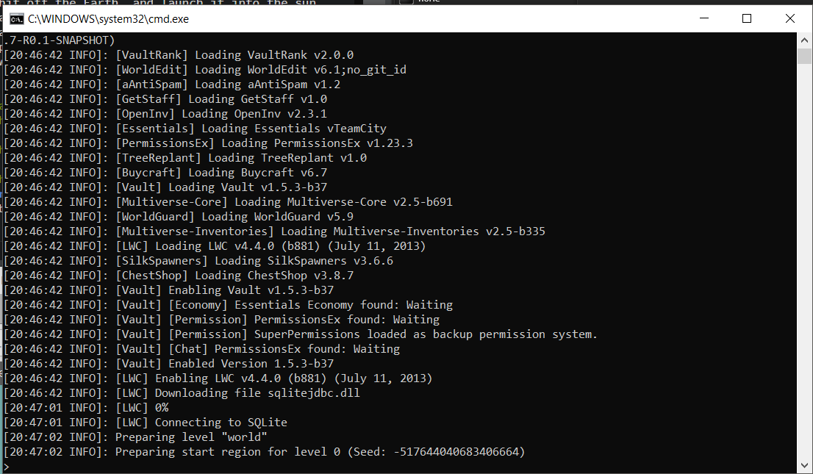

What is TERZ?
TERZ is our solution to hosting multiplayer servers on your computer for free.
You pick up the mighty SORD.....

The easiest thing to do here is ditch the SLICE, stick the SORD..... in the weapons row, and rhyme it with BOARD.
Your bro had a lot of junk like this manufactured over the years. He patented the technology for producing THREE DIMENSIONAL JPEG ARTIFACTS, to make products shittier than was ever previously imaginable. He made a killing off them. Not because anyone bought this garbage. But because they were so cheap to manufacture, their cost was actually NEGATIVE, therefore miraculously netting him profit for every unit produced. He made so much money this way, he had enough to finance manned space missions to haul all of the hideous unwanted jpeg shit off the Earth, and launch it into the sun. But years thereafter, every now and then someone would report a stray shitty skateboard slowly drifting back into Earth's atmosphere. People would pray they would burn up on reentry. But they never would.
Among the many ways you tend to multitask is by maintaining an ever-alert dream self. There's a lot to keep an eye on when it comes to the cloak and dagger politics of Derse, especially these days. Can't let your guard down for a second.
The pile at the foot of your bed consists of hats, a few stray robo-parts, and SMUPPETS. Smuppets are a lovable sort of plush of your own design. You love everything about puppets. You're always thinking about the craft of their production, their operation, cool new designs and such. If the cosmos didn't have more important plans for you, and if the world weren't so fucked up, you'd make a run at fame and fortune with your own puppet enterprises, just like your BRO did with all his weird shit.